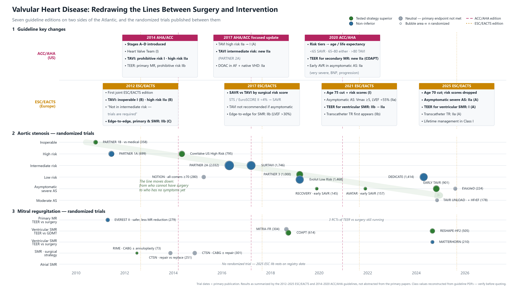

Redrawing the Lines Between Surgery and Intervention
2012 ESC부터 2025 ESC까지 일곱 개 판, 그리고 그 사이에 발표된 무작위 임상시험. AS에서는 선이 위험도에서 나이로, MR에서는 원인별로 다시 그어졌습니다.
연대기 — 가이드라인과 임상시험을 한 축에
1행: 판별 핵심 변화 (위 미국, 아래 유럽) · 2행: AS 시험, 수술불가 → 중등도 AS로 내려가는 계단 · 3행: MR 시험, 원인과 비교군별

판별 권고 등급표
색 = 권고 등급. 한 칸에 권고가 여럿이면 가장 높은 등급의 색. 미국의 1/2a/2b는 I/IIa/IIb로 표기를 통일했습니다(근거수준은 원문 그대로).
"TAVI for low risk"라고 쓴 가이드라인은 없습니다. 저위험 환자는 결정 축이 수술 위험도에서 나이로 바뀌면서 TAVI 대상이 됐습니다. 초록이 2012년의 수술불가 칸에서 시작해 2020년부터 저위험 칸까지 번집니다. 위험도 칸의 색은 TAVI에 준 등급입니다.
| 판 | 결정 축 | 저위험 | 중위험 | 고위험 | 수술불가 | 저위험 TAVI? | 새 RCT |
|---|---|---|---|---|---|---|---|
| 2012 ESC | Heart team + 점수 (EuroSCORE ≥20% / STS ≥10% "제안") | AVR I (B) | AVR · "TAVI should not be performed — trials are required" | Heart team이 선호하면 TAVI IIa (B) | AVR 부적합: TAVI I (B) | ✗ | PARTNER 1B · 1A |
| 2014 AHA/ACC | 수술 위험도 (STS + 노쇠 + 장기 + 시술 장애) | SAVR I (A) | SAVR I (A) | SAVR 또는 TAVI IIa (B) | 생존 >12개월이면 TAVI I (B) | ✗ | PARTNER 1B · 1A |
| 2017 AHA/ACCfocused update | 수술 위험도 | SAVR I (B-NR) · "TAVI not studied at low risk" | SAVR I (B-NR) · TAVI IIa (B-R) 신설 | SAVR 또는 TAVI IIa → I (A) | TAVI I (A) | ✗ | CoreValve US HR · PARTNER 2A |
| 2017 ESC | 수술 위험 점수 (STS / EuroSCORE II 4%) | <4%, 다른 위험요인 없음: SAVR I (B) | ≥4% 또는 노쇠 등: Heart Team 결정, 고령 + TF 가능하면 TAVI 선호 I (B) | SAVR 부적합: TAVI I (B) | ✗ | PARTNER 2A · SURTAVI | |
| 2020 ACC/AHA | 나이 + 기대여명 (위험도 구분 폐지) | <65세 또는 기대여명 >20년: SAVR I (A) 65–80세: SAVR 또는 TF-TAVI I (A) >80세 또는 기대여명 <10년: TF-TAVI I (A) | 고위험/수술불가: 생존 >12개월이면 TAVI I (A) | ✓ ≥65세 | PARTNER 3 · Evolut Low Risk | ||
| 2021 ESC | 75세 + 위험 점수 | <75세 + STS/EuroSCORE II <4%: SAVR I (B) ≥75세: 위험도와 무관하게 TAVI I (A) 그 외: Heart Team I (B) | >8% 또는 수술 부적합: TAVI I (A) | ✓ ≥75세 | PARTNER 3 · Evolut Low Risk | ||
| 2025 ESC | 70세 (점수 기준 삭제, 평생 관리) | <70세 + 저위험: SAVR I (B) ≥70세: 위험도와 무관하게 TAVI I (A) 그 외: Heart Team I (B) | Heart Team: SAVR 또는 TAVI I (B) TF 부적합: 비경대퇴 TAVI IIa (B) | ✓ ≥70세 | DEDICATE · NOTION-2 | ||
| 2023 KSE한국 | 75세 + STS PROM (ESC 2021 체계, 등급 없음) | <75세 + STS <4%: SAVR 우선 ≥75세: TAVR 우선 그 외: Heart Team | STS ≥8% 또는 SAVR 부적합: TAVR 우선 | ✓ ≥75세 | 국내: RECOVERY (무증상 AS, Vmax ≥4.5) | ||
2012 ESC 중위험 칸의 "should not be performed"는 본문 문장이며 Class III 권고가 아니므로 회색입니다.
1차성 MR 수술은 모든 판에서 Class I였습니다. TEER는 심실성 2차성 MR에서만 IIb → IIa → I (2025)로 올라갔고, 1차성 MR에서는 아직 고위험 환자의 IIa에 머물러 있습니다.
| 판 | 1차성 MR · 수술 (무증상 기준) | 1차성 MR · TEER | 심실성 SMR · 수술 | 심실성 SMR · TEER | 심방성 SMR | 새 RCT |
|---|---|---|---|---|---|---|
| 2012 ESC | LVESD ≥45 또는 LVEF ≤60%: I (C) 새 AF 또는 SPAP >50: IIa (C) Flail + LVESD ≥40: IIa (C) | 수술불가/고위험, 기대여명 >1년: IIb (C) | CABG 시, LVEF >30%: I (C) CABG 시 중등도 MR: IIa (C) | 수술불가/고위험, "무작위 연구로 확인 필요": IIb (C) | 구분 없음 | EVEREST II |
| 2014 AHA/ACC | LVEF ≤60% 또는 LVESD ≥40: I 성형 >95% 내구, 사망 <1%: IIa | 수술불가, NYHA III–IV: IIb (B) | CABG/AVR 시: IIa 단독, NYHA III–IV: IIb | — | 구분 없음 | EVEREST II · RIME |
| 2017 AHA/ACCfocused update | LVEF ≤60% 또는 LVESD ≥40: I (2014) + 연속 영상에서 LV 변화: IIb (C-LD) | 수술불가: IIb (2014 유지) | CABG/AVR 시: IIa (2014) Chordal-sparing MVR > 축소 판륜성형: IIa (B-R) CABG 시 중등도: IIb (B-R) | — "no equivalent 2017 recommendation" | 구분 없음 | CTSN severe · CTSN moderate |
| 2017 ESC | LVESD ≥45 또는 LVEF ≤60%: I LVESD 40–44 + flail/LA 확장: IIa | 수술불가/고위험, 무익하지 않을 때: IIb | CABG 시, LVEF >30%: I | LVEF >30%, 적합한 해부학: IIb | 구분 없음 | — |
| 2020 ACC/AHA | LVEF ≤60% 또는 LVESD ≥40: I (B-NR) 성형 >95% 내구: IIa | 고위험/수술불가, NYHA III–IV: IIa (B-NR) | CABG 시: IIa (B-NR) 단독, NYHA III–IV: IIb Chordal-sparing MVR: IIb (B-R) | COAPT 기준 (LVEF 20–50, LVESD ≤70, PASP ≤70): IIa (B-R) 신설 | 수술, NYHA III–IV: IIb | COAPT · MITRA-FR |
| 2021 ESC | LVESD ≥40 또는 LVEF ≤60%: I LVESD <40 + LA 확장: IIa | 수술불가/고위험: IIb (B) | CABG 또는 다른 수술 시: I (B) — LVEF >30% 조건 삭제 | 반응 예측 기준 (LVEF 기준 대체): IIa (B) | 구분 없음 | COAPT · MITRA-FR |
| 2025 ESC | LVESD ≥40, LVESDi ≥20 또는 LVEF ≤60%: I (B) AF/SPAP >50/LAVI ≥60/TR 중 ≥3개: I (B) 신설 | 고위험: IIa (B) | CABG 시 중증: I (B) CABG 시 중등도: IIb (B) | Table 7 기준: I (A) | 수술 + AF 절제 + LAAO: IIa 수술 부적합 시 TEER: IIb | RESHAPE-HF2 · MATTERHORN |
| 2023 KSE한국 | LVEF ≤60%, LVESD ≥40, MR 관련 AF, PASP >50, LA ≥60 mL/m² 또는 ≥55 mm (ESC 2021 목록, 등급 없음) | 증상 + 고위험 + 해부학 적합 · MFDS 2019 승인 | CABG 시 "reasonable" · 중증 기준은 1차성과 같은 EROA ≥0.4 cm² | COAPT 기준: "reasonable" | 판륜성형 + AF 절제 "can be beneficial" | RCT 없음 · 국내 TEER 연구 MR ≤2+ 94% |
2017 AHA/ACC 행은 바뀐 권고와 함께 2014년에서 유지된 권고를 "(2014)"로 표시했습니다. 2014 AHA/ACC와 2017 ESC의 등급 일부는 원문 대조가 필요합니다.
출발선 — 2012 ESC/EACTS
첫 ESC/EACTS 공동 판이자 TAVI와 경피적 edge-to-edge 시술이 처음 들어간 유럽 가이드라인. PARTNER 1B·1A, EVEREST II 직후, 중위험 시험 이전.
| 질문 | 2012 ESC | 이후 |
|---|---|---|
| 무증상 중증 AS | "매우 중증 AS에서도 조기 AVR을 일반적으로 권할 근거 부족" · Vmax >5.5: IIa (C) | Vmax ≥5 (2021) → 표지자 없이 IIa (A) (2025) |
| 2차성 MR 중증 기준 | EROA ≥20 mm², RVol ≥30 mL | ≥40 / ≥60 (2021) → ≥30 / ≥45 (2025) — 왕복 |
| 좌심 수술 시 경도·중등도 TR + 판륜 ≥40 mm | IIa (C) | 2017·2021 유지 → 2025년 IIb로 하향 |
| 기계판막 vs 조직판막 나이 | 기계 <60/<65 · 조직 >65/>70 (IIa C) | 2025년과 같은 숫자 — 13년간 그대로 |
| TAVI 후 이중 항혈소판 | "근거 없이" 관행적으로 사용, 등급 없음 | III (B) (2025, POPular TAVI) |
출처
2012 ESC/EACTS (Eur Heart J 2012;33:2451) · 2014 AHA/ACC (JACC 2014;63:e57) · 2017 AHA/ACC focused update (Circulation 2017;135:e1159) · 2017 ESC/EACTS (Eur Heart J 2017;38:2739) · 2020 ACC/AHA · 2021 ESC/EACTS (Eur Heart J 2022;43:561) · 2025 ESC/EACTS · 2023 KSE. 시험 결과와 연도는 가이드라인 요약 기준이며 원 논문 확인이 필요합니다.